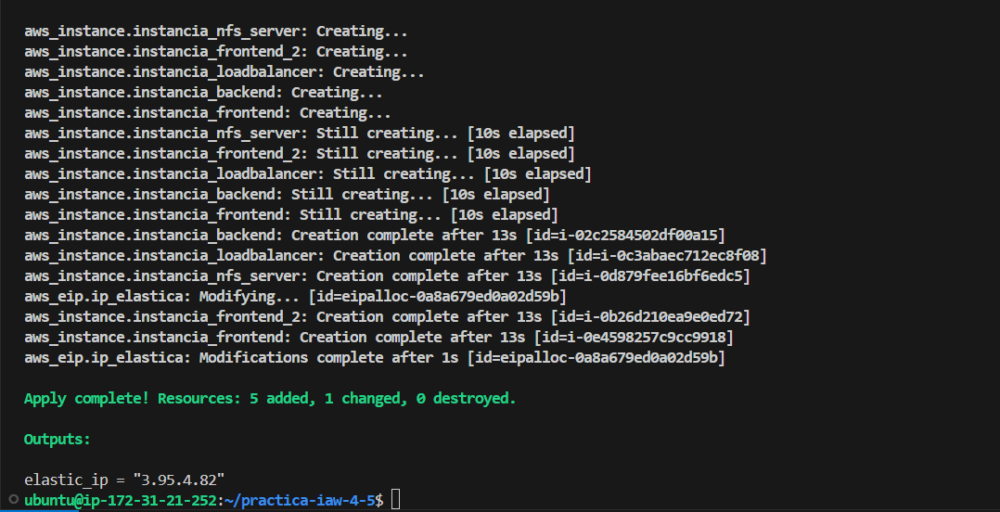
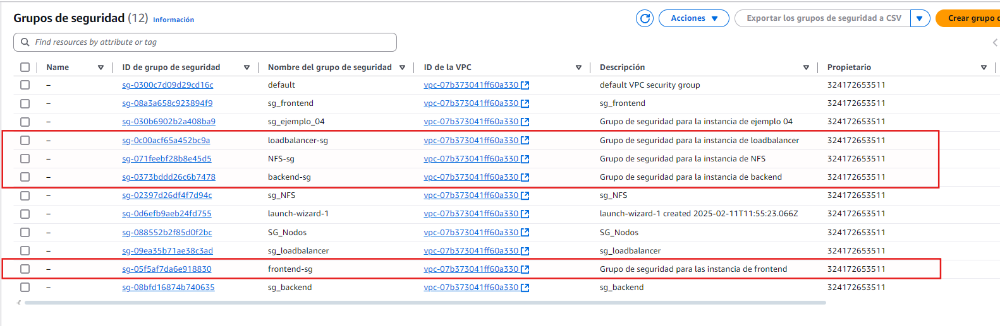
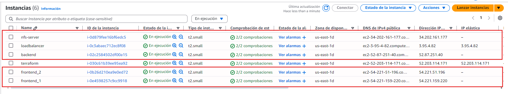

Practica IAW 4.5¶
Implantación de Wordpress en AWS utilizando Terraform¶
En esta practica vamos a realizar la creacion de la estructura de la Practica 1.11 - Implantación de Wordpress en AWS utilizando una arquitectura de tres niveles a traves de una plataforma de computacion en la nube mediante Terraform.
¿Qué es Terraform?¶
Terraform es una herramienta de infraestructura como código (Infraestructure as Code, IaC) que permite crear, modificar y eliminar infraestructura de forma automática.
Terraform puede gestionar los recursos de diferentes proveedores de servicios en la nube, como AWS, Google Cloud, Azure, etc.
Infraestructura necesaria¶
La infraestructura propuesta consta de cinco máquinas virtuales, un balanceador de carga, una capa front-end formada por dos servidores web y un servidor NFS y una ultima capa back-end formada por un servidor, cada capa de la infraestrutura tendra su respectivo grupo de seguridad con reglas personalizadas.
Necesitaremos crear las siguientes máquinas virtuales y reglas:
-
Balanceador: Acceso por SSH (puerto 22), HTTP (puerto 80) y HTTPS (puerto 443).
-
Frontal Web 1: Acceso por SSH (puerto 22) y NFS (puerto 2049).
-
Frontal Web 2: Acceso por SSH (puerto 22) y NFS (puerto 2049).
-
Servidor NFS: NFS: Acceso por SSH (puerto 22) y NFS (puerto 2049).
-
Servidor de Base de Datos: Acceso por SSH (puerto 22) y MySQL (puerto 3306).
Contenido del archivo de las variables¶
Creación de las variables necesarias para la instancia¶
variable "ami_id" {
description = "Identificador de la AMI"
type = string
default = "ami-00874d747dde814fa"
}
variable "instance_type" {
description = "Tipo de instancia"
type = string
default = "t2.small"
}
variable "key_name" {
description = "Nombre de la clave pública"
type = string
default = "vockey"
}
variable "region" {
description = "Región de AWS donde se creará la instancia"
type = string
default = "us-east-1"
}
Creación de las variables necesarias para el grupo de seguridad del frontend¶
variable "sg_frontend" {
description = "Nombre del grupo de seguridad del frontend"
type = string
default = "frontend-sg"
}
variable "frontend" {
description = "Puertos de entrada del grupo de seguridad del frontend"
type = list(number)
default = [22, 2049]
}
variable "sg_des_front" {
description = "Descripción del grupo de seguridad del frontend"
type = string
default = "Grupo de seguridad para las instancia de frontend"
}
Creamos las variables necesarias para la creación de la instancias.¶
variable "instance_frontend" {
description = "Nombre de la instancia del frontend"
type = string
default = "frontend_1"
}
variable "instance_frontend_2" {
description = "Nombre de la instancia del frontend"
type = string
default = "frontend_2"
}
Creación de las variables necesarias para el grupo de seguridad del loadbalancer¶
variable "sg_loadbalancer" {
description = "Nombre del grupo de seguridad del loadbalancer"
type = string
default = "loadbalancer-sg"
}
variable "loadbalancer" {
description = "Puertos de entrada del grupo de seguridad del loadbalancer"
type = list(number)
default = [22, 80, 443]
}
variable "sg_des_load" {
description = "Descripción del grupo de seguridad del loadbalancer"
type = string
default = "Grupo de seguridad para la instancia de loadbalancer"
}
Creamos la variable necesaria para la creación de la instancia¶
variable "instance_loadbalancer" {
description = "Nombre de la instancia del loadbalancer"
type = string
default = "loadbalancer"
}
Creación las variables necesarias para el grupo de seguridad del backend¶
variable "sg_backend" {
description = "Nombre del grupo de seguridad del backend"
type = string
default = "backend-sg"
}
variable "backend" {
description = "Puertos de entrada del grupo de seguridad del backend"
type = list(number)
default = [22, 3306]
}
variable "sg_des_back" {
description = "Descripción del grupo de seguridad del backend"
type = string
default = "Grupo de seguridad para la instancia de backend"
}
Creamos la variable necesaria para la creación de la instancia¶
variable "instance_backend" {
description = "Nombre de la instancia del backend"
type = string
default = "backend"
}
Creación las variables necesarias para el grupo de seguridad del NFS-Server¶
variable "sg_nfs" {
description = "Nombre del grupo de seguridad del NFS-server"
type = string
default = "NFS-sg"
}
variable "nfs" {
description = "Puertos de entrada del grupo de seguridad del nfs"
type = list(number)
default = [22, 2049]
}
variable "sg_des_nfs" {
description = "Descripción del grupo de seguridad del NFS"
type = string
default = "Grupo de seguridad para la instancia de NFS"
}
Creamos la variable necesaria para la creación de la instancia¶
variable "instance_nfs" {
description = "Nombre de la instancia del NFS"
type = string
default = "nfs-server"
}
Creación y configuración de los frontend¶
Creamos el grupo de seguridad del frontend.
resource "aws_security_group" "frontend-sg" {
name = var.sg_frontend
description = var.sg_des_front
}
Creamos las reglas de entrada del grupo de seguridad. Utilizamos un bucle para recorrer la lista de puertos definida como variable
resource "aws_security_group_rule" "ingress_frontend" {
security_group_id = aws_security_group.frontend-sg.id
type = "ingress"
count = length(var.frontend)
from_port = var.frontend[count.index]
to_port = var.frontend[count.index]
protocol = "tcp"
cidr_blocks = ["0.0.0.0/0"]
}
Creamos las reglas de salida del grupo de seguridad.
resource "aws_security_group_rule" "egress_frontend" {
security_group_id = aws_security_group.frontend-sg.id
type = "egress"
from_port = 0
to_port = 0
protocol = "-1"
cidr_blocks = ["0.0.0.0/0"]
}
Creamos una instancia EC2 para el frontend 1.
resource "aws_instance" "instancia_frontend" {
ami = var.ami_id
instance_type = var.instance_type
key_name = var.key_name
security_groups = [aws_security_group.frontend-sg.name]
tags = {
Name = var.instance_frontend
}
}
Creamos una instancia EC2 para el frontend 2.
resource "aws_instance" "instancia_frontend_2" {
ami = var.ami_id
instance_type = var.instance_type
key_name = var.key_name
security_groups = [aws_security_group.frontend-sg.name]
tags = {
Name = var.instance_frontend_2
}
}
Creación y configuración del loadbalancer¶
Creamos el grupo de seguridad del loadbalancer
resource "aws_security_group" "loadbalancer-sg" {
name = var.sg_loadbalancer
description = var.sg_des_load
}
Creamos las reglas de entrada del grupo de seguridad del loadbalancer. Utilizamos un bucle para recorrer la lista de puertos definida como variable
resource "aws_security_group_rule" "ingress_loadbalancer" {
security_group_id = aws_security_group.loadbalancer-sg.id
type = "ingress"
count = length(var.loadbalancer)
from_port = var.loadbalancer[count.index]
to_port = var.loadbalancer[count.index]
protocol = "tcp"
cidr_blocks = ["0.0.0.0/0"]
}
Creamos las reglas de salida del grupo de seguridad.
resource "aws_security_group_rule" "egress_loadbalancer" {
security_group_id = aws_security_group.loadbalancer-sg.id
type = "egress"
from_port = 0
to_port = 0
protocol = "-1"
cidr_blocks = ["0.0.0.0/0"]
}
Creamos una instancia EC2 para el loadbalancer.
resource "aws_instance" "instancia_loadbalancer" {
ami = var.ami_id
instance_type = var.instance_type
key_name = var.key_name
security_groups = [aws_security_group.loadbalancer-sg.name]
tags = {
Name = var.instance_loadbalancer
}
}
Creamos una IP elástica y la asociamos a la instancia
resource "aws_eip" "ip_elastica" {
instance = aws_instance.instancia_loadbalancer.id
}
Creación y configuración del backend¶
Creamos el grupo de seguridad del backend
resource "aws_security_group" "backend-sg" {
name = var.sg_backend
description = var.sg_des_back
}
Creamos las reglas de entrada del grupo de seguridad del backend. Utilizamos un bucle para recorrer la lista de puertos definida como variable
resource "aws_security_group_rule" "ingress_backend" {
security_group_id = aws_security_group.backend-sg.id
type = "ingress"
count = length(var.backend)
from_port = var.backend[count.index]
to_port = var.backend[count.index]
protocol = "tcp"
cidr_blocks = ["0.0.0.0/0"]
}
Creamos las reglas de salida del grupo de seguridad.
resource "aws_security_group_rule" "egress_backend" {
security_group_id = aws_security_group.backend-sg.id
type = "egress"
from_port = 0
to_port = 0
protocol = "-1"
cidr_blocks = ["0.0.0.0/0"]
}
Creamos una instancia EC2 para el backend
resource "aws_instance" "instancia_backend" {
ami = var.ami_id
instance_type = var.instance_type
key_name = var.key_name
security_groups = [aws_security_group.backend-sg.name]
tags = {
Name = var.instance_backend
}
}
Creación y configuración del NFS-Server¶
Creamos el grupo de seguridad del NFS
resource "aws_security_group" "NFS-sg" {
name = var.sg_nfs
description = var.sg_des_nfs
}
Creamos las reglas de entrada del grupo de seguridad del NFS. Utilizamos un bucle para recorrer la lista de puertos definida como variable
resource "aws_security_group_rule" "ingress_nfs" {
security_group_id = aws_security_group.NFS-sg.id
type = "ingress"
count = length(var.nfs)
from_port = var.nfs[count.index]
to_port = var.nfs[count.index]
protocol = "tcp"
cidr_blocks = ["0.0.0.0/0"]
}
Creamos las reglas de salida del grupo de seguridad.
resource "aws_security_group_rule" "egress_nfs" {
security_group_id = aws_security_group.NFS-sg.id
type = "egress"
from_port = 0
to_port = 0
protocol = "-1"
cidr_blocks = ["0.0.0.0/0"]
}
Creamos una instancia EC2 para el nfs
resource "aws_instance" "instancia_nfs_server" {
ami = var.ami_id
instance_type = var.instance_type
key_name = var.key_name
security_groups = [aws_security_group.NFS-sg.name]
tags = {
Name = var.instance_nfs
}
}
Comprobaciones del funcionamiento¶
Comprobamos que se ejecuta correctamente

Comprobamos que se han creado correctamento los grupos en AWS.

Comprobamos que se han creado correctamento las instancias en AWS.
